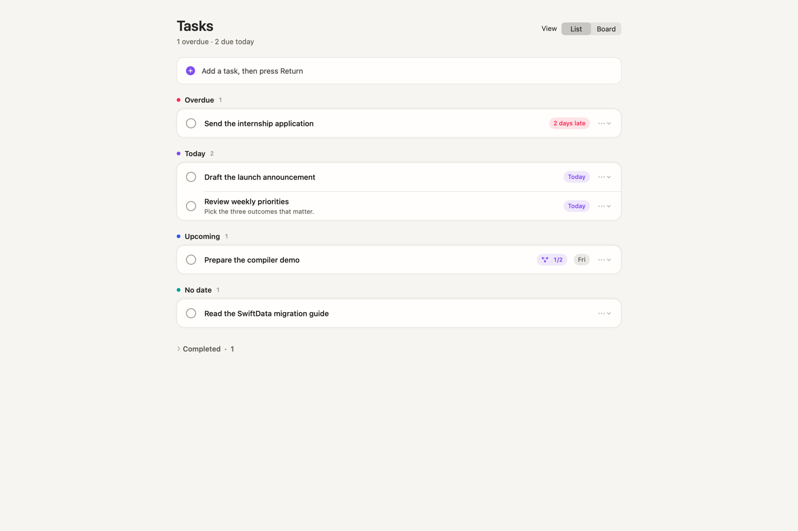
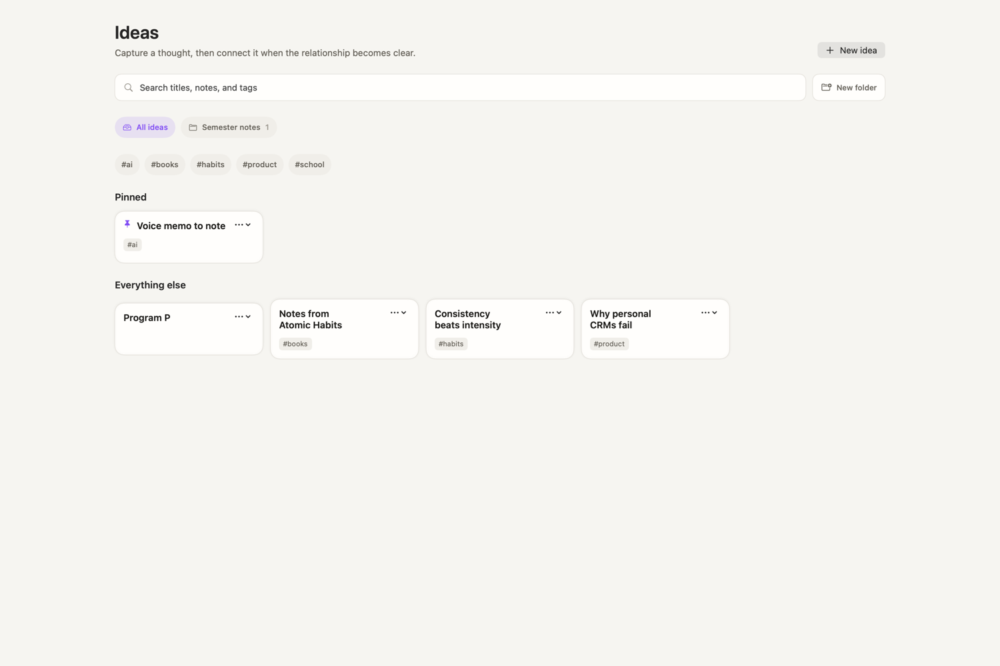
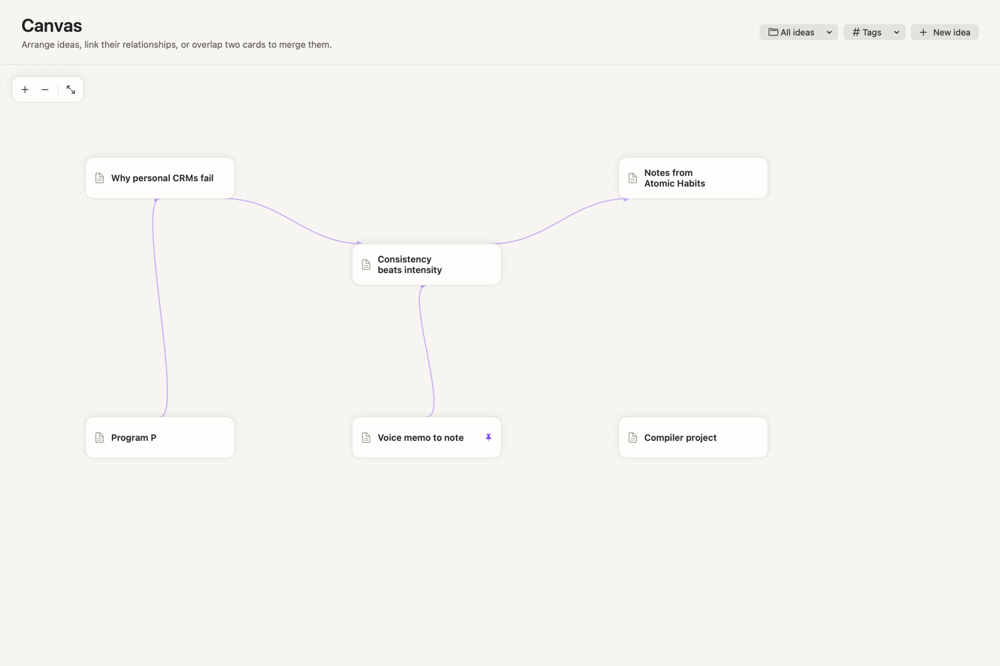
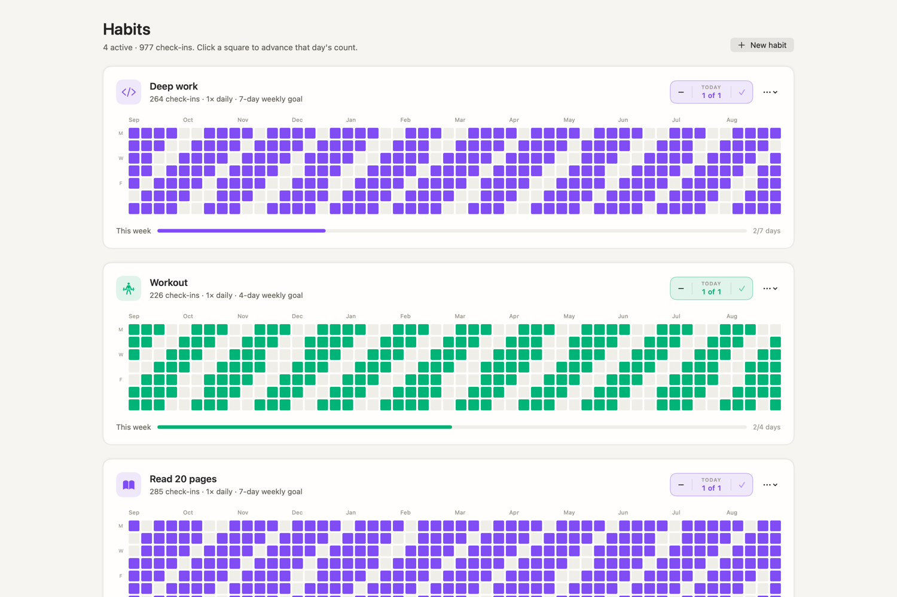
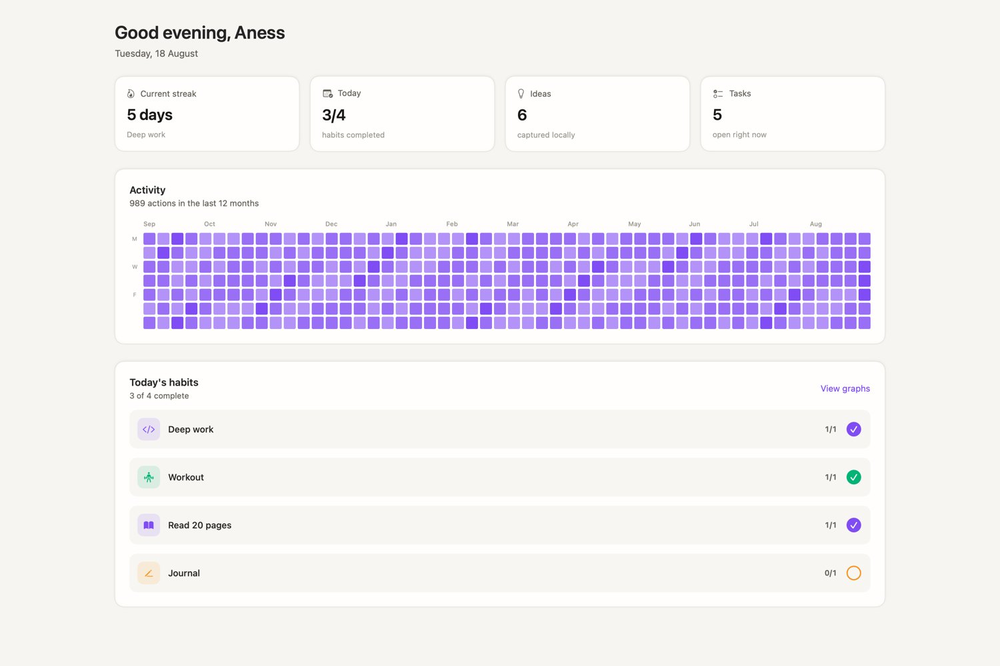

Workspaces
Separate spaces for separate parts of your life. Each keeps its own ideas, folders, tags and canvas. Reorder them by drag, and move a page between them whenever the boundary shifts.
One calm Mac window where your habits, connected ideas, a native canvas and your tasks all revolve around you — in workspaces you can lock with Touch ID. Private, offline, and entirely yours.
Everything that usually lives in six different apps — in one.
Six tools that usually live in six different apps — sharing one keyboard, one window, and one local database.
Separate spaces for separate parts of your life. Each keeps its own ideas, folders, tags and canvas. Reorder them by drag, and move a page between them whenever the boundary shifts.
Mark a workspace private and it opens only after Touch ID, with your Mac password as fallback. Press ⌘L to re-lock on your way out, and everything re-locks on every launch.
Markdown shortcuts, slash commands, drag-to-reorder blocks, nested sub-pages and page emojis. Select blocks with the mouse or the keyboard, then copy or delete them as a unit.
Drag idea cards around an infinite grid, pull Bézier links between them, overlap two to merge. Rebuilt natively in SwiftUI — no browser engine, no React Flow.
Type and press Return to capture. Work is grouped by Overdue, Today, Upcoming and No date — not one flat list. A spatial board adds steps, workflows, sticky notes and ink.
Interactive 52-week heatmaps, weekly goals and one-click check-ins. Consistency becomes something you look at rather than something you estimate.
Tasks
Type and press Return to capture. Work sorts itself into Overdue, Today, Upcoming and No date, so the top of the screen answers the only question that matters.

Ideas
Pin what matters, file it in a folder, tag it, and find it again by title, body or tag. Cards stay quiet — no note content leaks onto the screen behind you.

Canvas
Every workspace gets an infinite canvas. Drag the cards where they belong, pull a link between two of them, and overlap a pair to merge. Rebuilt natively — no browser engine inside.

Habits
A full year per habit, one square per day. Weekly goals sit under each graph, and today is one click away.

Home
Your streak, today's habits, a year of activity and what's still open — and deliberately nothing from inside your notes.

Try it here
This is a small version of the real canvas, running in the page. In the app it holds your whole workspace — with pan, zoom, sub-pages and merge.
Drag a card to move it · drag the ● port to connect two cards
Under the hood
Canvas.Command palette
Press ⌘K to jump anywhere, create anything, log a habit, or open an idea or a person — without lifting your hands from the keyboard.
Local-first & private
No account. No server. No analytics. No telemetry. Orbit stores everything in a local database and works fully offline — forever.
Open the app and start. Nothing to sign up for, nothing to log in to.
No network required. Your data never leaves the device unless you export it.
One-action, human-readable JSON backup and restore from Settings → Data.
No trackers, no ping-home, no hidden analytics. What you do is yours alone.
Download Orbit for macOS and try it in under a minute. Free, private, and yours.
Download for macOSUniversal · macOS 14+ · 6.6 MB
If macOS Gatekeeper warns that the app is from an unidentified developer, right-click Orbit.app → Open → Open. You only need to do this once.